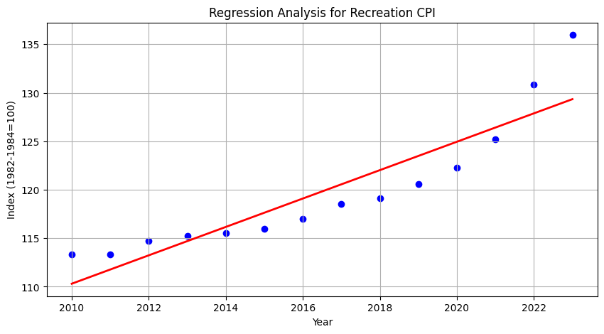
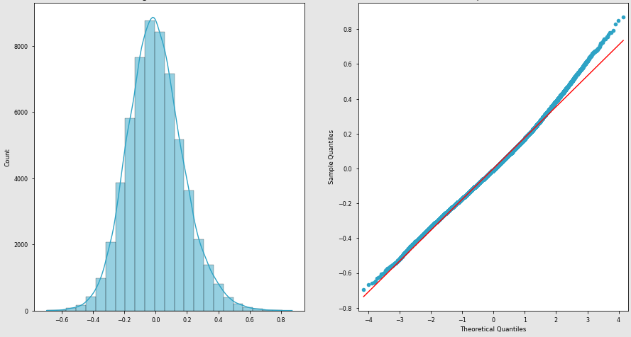

Internationalization of Wine Businesses
Apr 2024
Python
This project delves into structured multidimensional data visualization, exploring a dataset on wine quality for internationalization.
With techniques capable of displaying up to 6 dimensions, the graphics provide deep insights into the complex qualities that define wine characteristics.
The code for this detailed exploration of wine quality can be found here.

ASCII Art
Apr 2024
JavaScript HTML
Original Image

ASCII Image

World Bank
Feb 2024
Python
This project leverages the World Bank API to present economic data from various countries through interactive charts and dashboards.
It was implemented in Python and employs Docker Compose to set up the necessary containers for local execution.
The code for the World Bank economic data project can be found here.

Bureau of Labor Statistics
Dec 2023
Python
This project focuses on an API from the Bureau of Labor Statistics (BLS) that provides insights into the Consumer Price Index (CPI).
The project API enables a deep dive into macroeconomic trends and price fluctuations over time.
The code for the Macroeconomics data analysis project can be found here.

National Health Survey
Dec 2023
Python
The analytical model of the project informs us that with each additional year of age, an individual tends to gain an additional 1.34% in weight.
However, this effect peaks at the age of 67, beyond which the incremental effects of age on weight begin to decline.
The code for the PNS analysis project can be found here.
